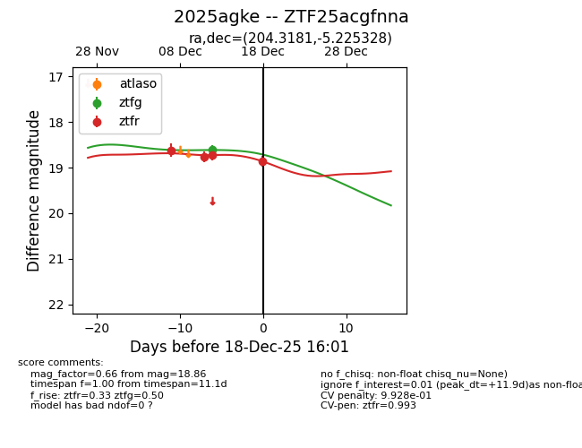
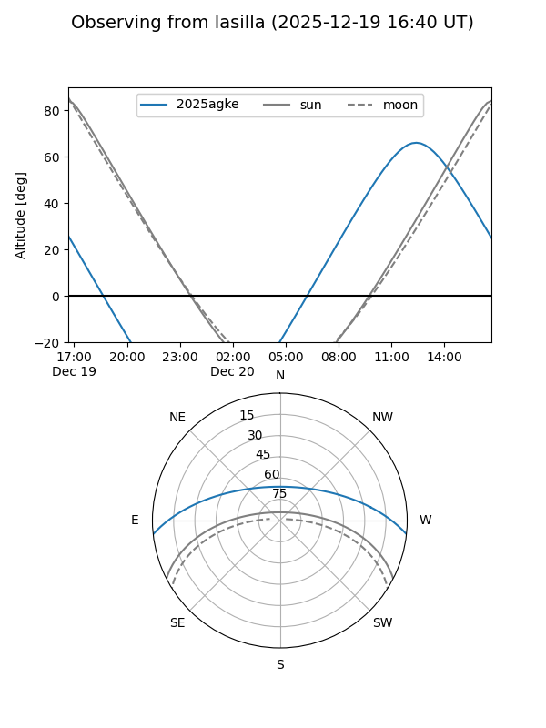
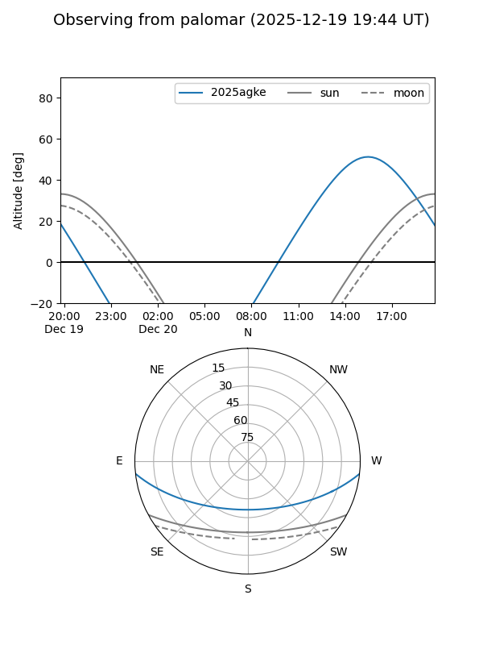
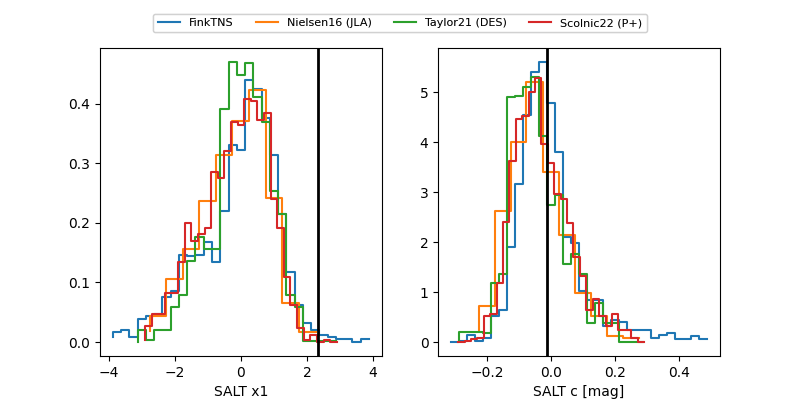

2025agke
Target 2025agke at 2025-12-18 11:18
Aliases and brokers:
FINK: fink-portal.org/ZTF25acgfnna
Lasair: lasair-ztf.lsst.ac.uk/objects/ZTF25acgfnna
ALeRCE: alerce.online/object/ZTF25acgfnna
TNS: wis-tns.org/object/2025agke
YSE: ziggy.ucolick.org/yse/transient_detail/2025agke
alt names
ZTF25acgfnna (ztf,fink_ztf)
2025agke (tns,yse)
Coordinates:
equatorial (ra, dec) = 204.3181,-5.22533
equatorial (HMS+DMS) = 13:37:16.36,-05:13:31.18
galactic (l, b) = (323.5406,+55.80162)
Photometry
last ztfg=18.61, ztfr=18.72
1 ztfg, 3 ztfr detections
Lightcurve

Visibility


Additional plots
